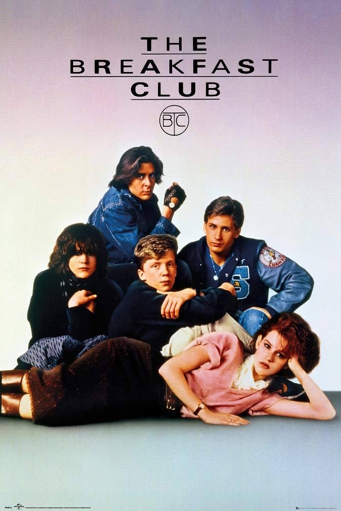
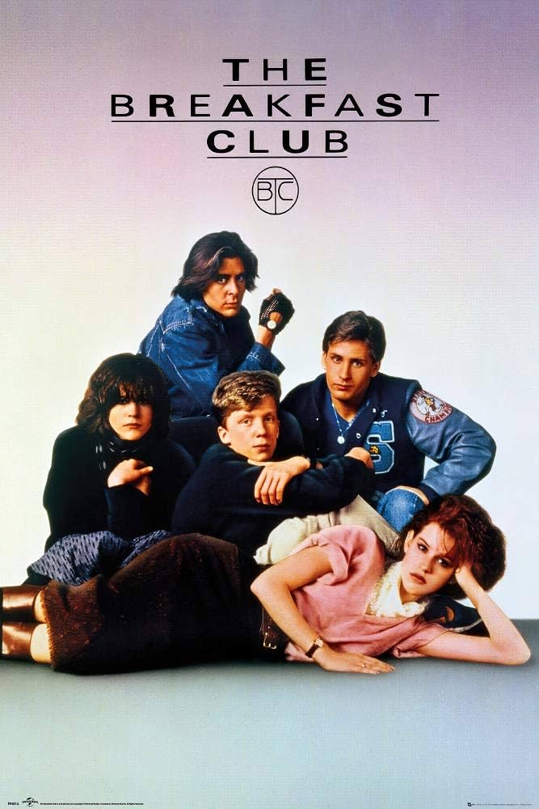

Genre: Action & Sci-Fi Run time: 2h 23m Rating:
Transformers (2007) is about alien robots looking for an cube called the Allspark,the Allspark created thier life long time ago.Then millions of years later, The Autobots, the protaginst, & the Decepticons, the antaginst, are looking for the Allspark before one of the fractions can get to it first.The Autobots wants to get to the Allspark first before Megatron & his Decepticons get to it & use the Allspark to turn Earth machines etc into evil and use the Allspark to take over Earth.
Genre: Action Adventure Fantasy Science fiction Space Opera Run Time: 2h 26m Rating:
Star Wars Episode3 Revenge of the sith is the last movie
in the prequel trilogy, & how some of the main characters in
the movie Anakin Skywalker, Obi-Wan Kenobi, etc, are still
trying to find the sith lord while later on emperor
palpatine revels to Anakin that he is the sith lord because
the emperor wants Anakin to be his new apperantice and
Anakin does become his new apperantice because he has been
having nightmares that his wife (Padme) will pass away
after she gives birth to their twins. So Anakin Join's the
darkside and does missions for the emperor so he can prevent
his wife from passing away. He betray's everyone he knows
including wife and during the climax Anakin & Obi-Wan Kenobi
fights and Obi-Wan wins the fight while Anakin substains
seerious burns to where he has to where a life support suit
which he becomes Darth Vader, Padme passes away after giving
birth to her and Anakin's children. But Luke & Leia was
split up so the Empire would not feel their pressance.
Genre: Comedy Run Time:1h 37 Rating:
The Breakfast Club is about five Highschool students spending a day in detention on saturday morning & they learn about each other and finds a way of learning how to deal with their past that people may see them as.